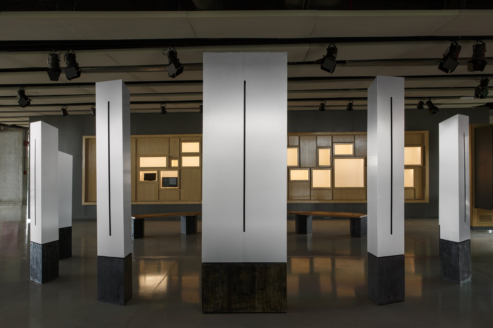

Joao Wilbert · SESI Lab
Objeto do Tempo
Project management for a large-scale participatory installation by artist Joao Wilbert, currently at SESI Lab in Brasília. The work draws on responses from people across Brazil about the passing of time — translating them into incidental sounds, rhythms and visual columns that mark the succession of voices. Coordination spanned teams in London, San Francisco, China, Brazil and Argentina.
Installation
Interactive
Brasil
View project →